VRメニューの作成
新規シーンの作成
今回は前回までに作成したVRアプリケーションにUIによる画面遷移機能の実装をしていきたいと思います。
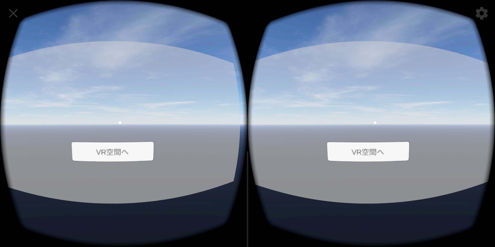
まずは前回までに作成したUnityプロジェクトを開きましょう。
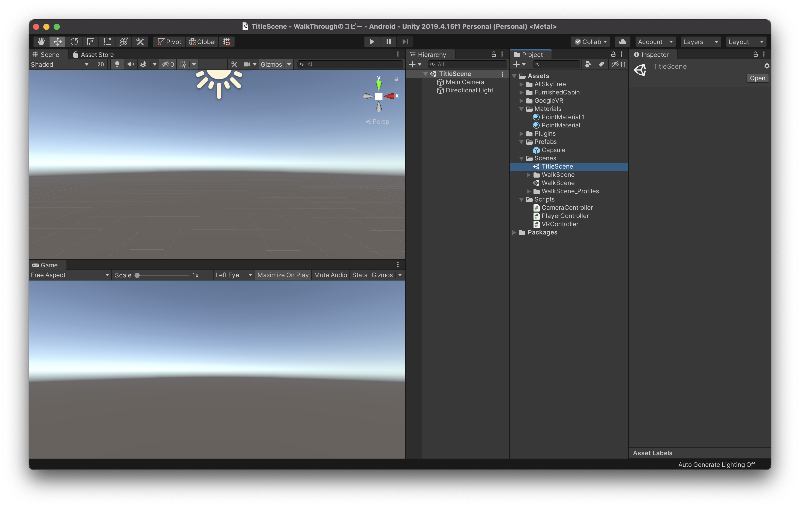
Unityのプロジェクトを開いたら、新規でシーンを作成し、名前を「TitleScene」としてください。
シーンの作成方法などは前回までの教材を参考にしてください。
 次にヒエラルキーウィンドウからUIパーツの「Panel」と「Button」を配置します。Canvasは上から下の順にコンポーネントを描画するので、必ず「Plane → Button」の順番にしてください。
次にヒエラルキーウィンドウからUIパーツの「Panel」と「Button」を配置します。Canvasは上から下の順にコンポーネントを描画するので、必ず「Plane → Button」の順番にしてください。

この状態だとCanvasが画面上に固定されているので、VRで左右を見ようとしてもCanvasが常に画面の中央についてきてしまいます。
これを解消するために、CanvasのインスペクターウィンドウのCanvasコンポーネントの「Renderモード」を「World Space」に変更してください。
これでCanvasは初期の位置に固定され、左右を見回せるようになります。
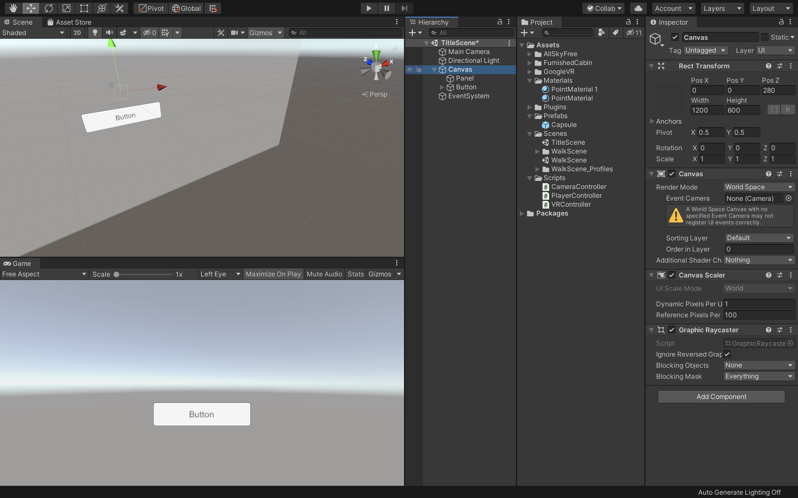
次にCanvasの「RectTransform」を上の画像のように変更してください。
こちらはある程度見えやすいように配置しているだけなので、配置や大きさは自由に変更してもらって構いません。
PosX：0
PosY：0
PosZ：280
Width：1200
Height：600
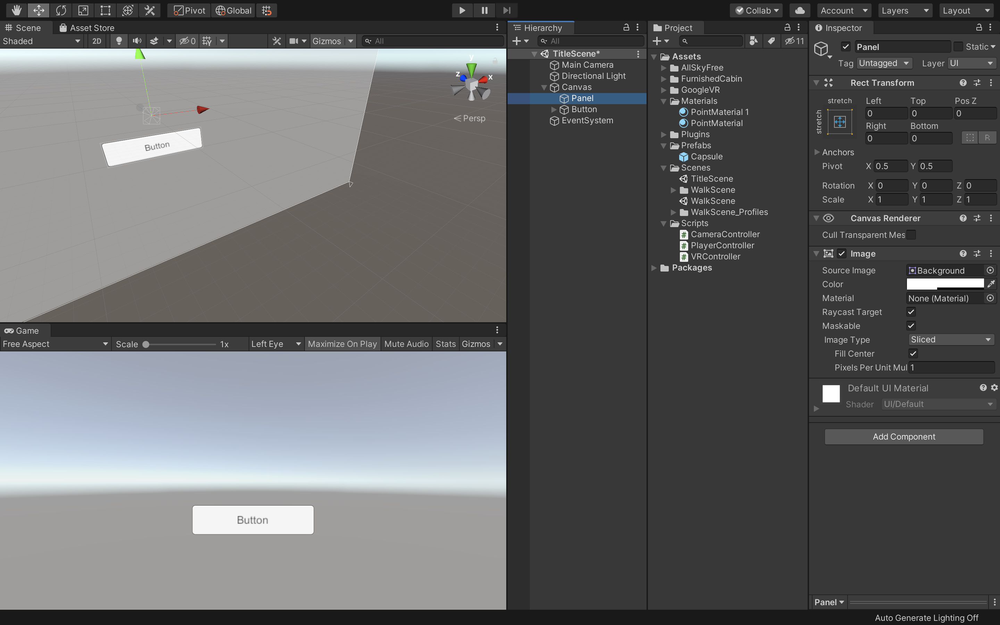
次にPanelも上の画像のような値に変更してください。
Panelを置くことでボタンが背景に溶け込まずに視認できます。（後でSkyBox等でボタンが見えにくくなるため）
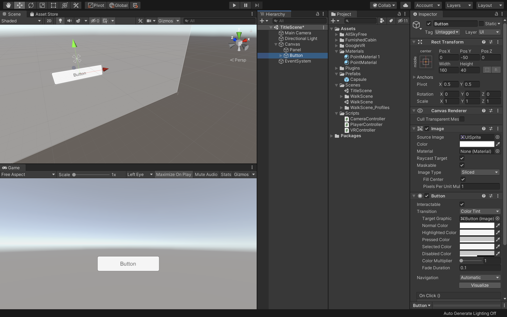
次にボタンの位置や大きさも上の画像を参考にちょうどいい場所に配置してください。
PosY : -50
Width : 160
Height : 40
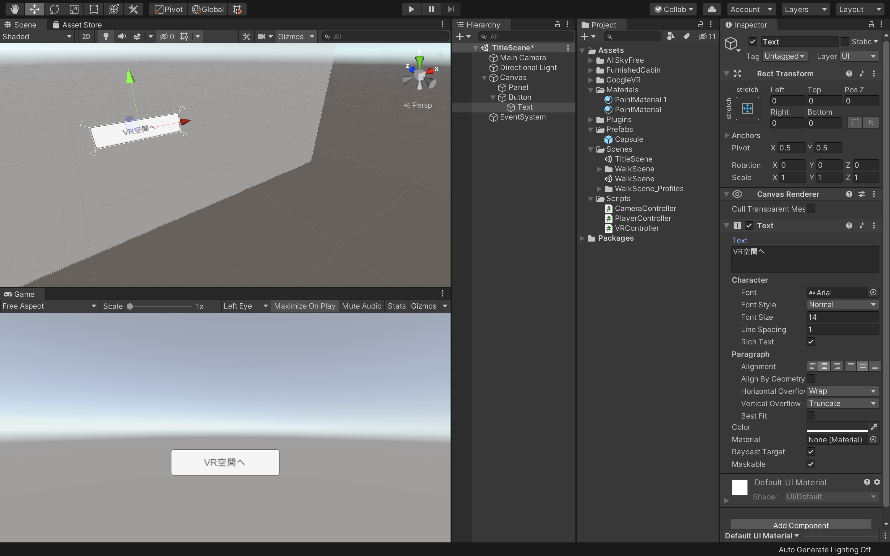
最後にButton内のテキストを書き換えます。今回は「VR空間へ」というふうにしました。
これでUIパーツの配置は完了です。
追加でタイトル等を配置したい場合は各自自由に配置してみてください。
VR用プレイヤーを作成
次にVR用のプレイヤーを作成します。
今回は特に移動させる必要がないので、単純にデバイスの傾きで視点操作ができるようにしましょう。
やり方に関しては簡単に解説を記述しますが、詳しくは前回までの教材を参考にしてください。
まずは新規で空のオブジェクトを作成し、名前を「Player」とします。
次に現在あるMainCameraをPlayerの子要素にして座標をリセットしてください。
そしてCameraコンポーネントの「ClippingPlanes」の「Near」を「0.09」に変更します。
次にプロジェクトウィンドウから「GoogleVR -> Prefabs -> GvrEditerEmulator」をヒエラルキーウィンドウにドラッグ&ドロップします。
プロジェクトウィンドウから「GoogleVR -> Prefabs -> EventSystem -> GvrEventSystem」をヒエラルキーウィンドウにドラッグ&ドロップします。
次に「GoogleVR -> Prefabs -> Cardbord -> GvrReticlePointer」をヒエラルキーのMainCameraにドラッグ&ドロップして子要素にしてください。
そしてGvrReticlePointerのPositionを全て０であることを確認し（０でなかったら０にしておく）、「Override Pointer Camera」の部分にヒエラルキーからMainCameraをドラッグ&ドロップします。
次にヒエラルキーでMainCameraを選択し、インスペクターウィンドウから「Add Component -> GoogleVR -> Gvr Pointer Physics Raycast」を追加してください
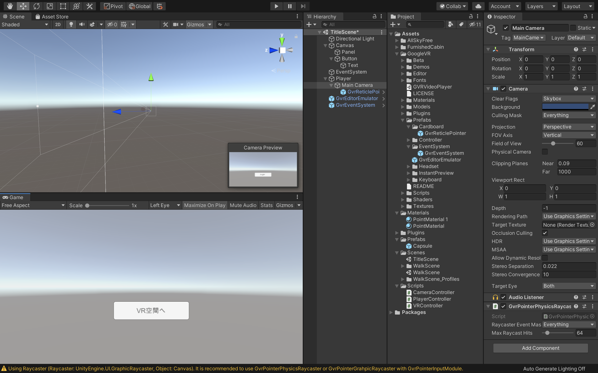
ここまでできた方は一度Unityを実行してみましょう。CtrlキーまたはOptionキーを押しながらマウスを移動させるときちんとUIパーツを固定させたまま視点が移動しているかと思います。
画面遷移用のスクリプトを作成
次にボタンに視点を当てたらVR空間へ画面遷移するようにします。
色々方法はあるのですが、今回はスクリプトから操作していきたいと思います。
まずは新規スクリプトを作成し、名前を「ButtonController」としてください。
そして新規スクリプトをVisualStudioで開き、コードを以下のように変更してください。
using System.Collections;
using System.Collections.Generic;
using UnityEngine;
using UnityEngine.UI;
using UnityEngine.SceneManagement;
public class ButtonController : MonoBehaviour
{
public GameObject player;
public Camera mainCamera;
public Button startButton;
public Text startText;
private float timeCount;
void Update()
{
RaycastHit hitObject;
Ray ray = new Ray(mainCamera.transform.position, mainCamera.transform.forward);
if (Physics.Raycast(ray, out hitObject))
{
if (hitObject.collider.CompareTag("StartButton"))
{
startButton.GetComponent<Image>().color = Color.red;
startText.GetComponent<Text>().color = Color.white;
timeCount += 0.01f;
if (timeCount > 1f)
{
SceneManager.LoadScene("WalkScene");
}
}
else
{
timeCount = 0f;
startButton.GetComponent<Image>().color = Color.white;
startText.GetComponent<Text>().color = Color.black;
}
}
}
}
こちらのコードの内容に関してはほぼ前回のコードと同じですので解説は省きます。
詳しく知りたい方は前回までの教科書を確認してください。
今回は追加でボタンに視点が合ったタイミングでボタンの色とテキストの色を変更するようにしています。
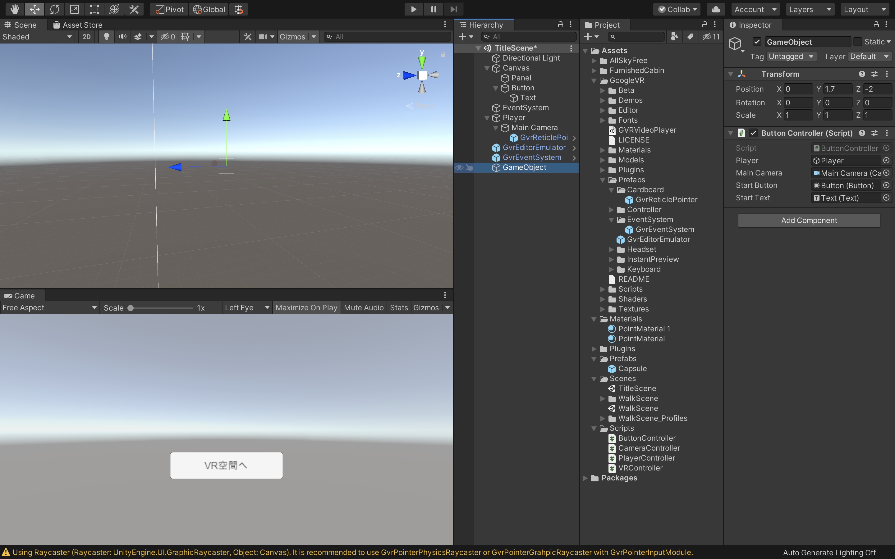
コードを書き終えたら保存し、Unityに戻ります。
そしてヒエラルキーウィンドウで新規で空のオブジェクトを作成し、今作成した「ButtonController」スクリプトをアタッチしてください。
そしてButtonControllerの空の項目の部分に該当するオブジェクトをドラッグ&ドロップで入れてあげます。
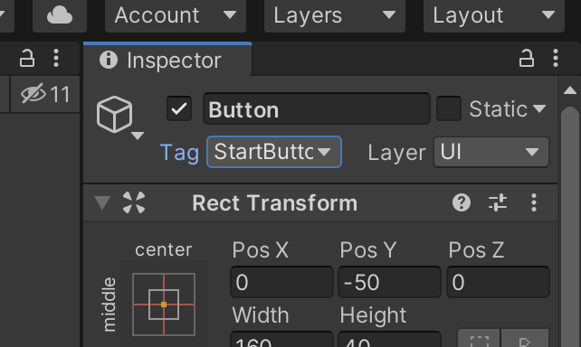
そしてButtonのタグの部分に新規で「StartButton」という名前のタグを作成し、設定してください。
前回まではこれで準備は完了だったのですが、今回はUIパーツにRayCast（視線）を当ててスクリプトを実行させるのでもうひと手間かかります。
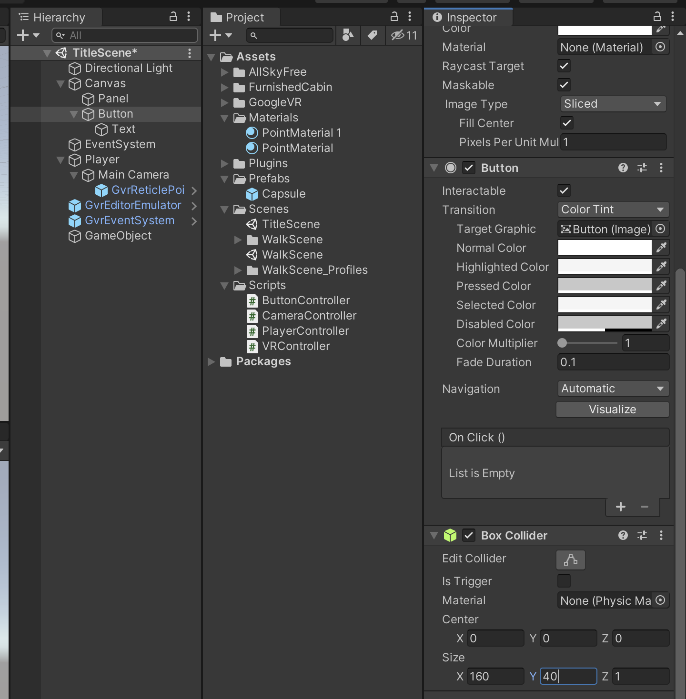
ヒエラルキーでButtonを選択し、インスペクターからAddComponentでBoxColliderを追加してください。
そしてBoxColliderのサイズをButtonと同じにします。
これでボタン全体をBoxColliderで覆うことができました。
ボタンにBoxColliderを付けた理由は、RayCastで視線とボタンの衝突判定を取得するためです。
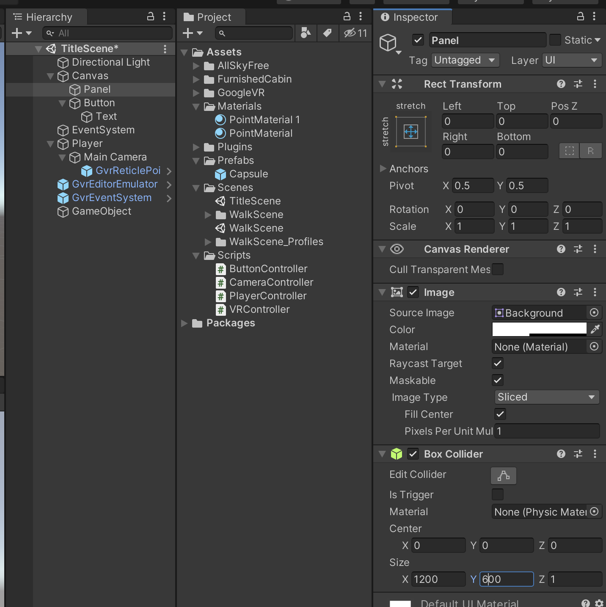
同様にPanelにもBoxColliderをつけて同じ大きさにしてください。
PanelにもBoxColliderを付けた理由は視線をボタンから外したタイミングでタイマーとボタン・テキストのカラーを変更するためです。
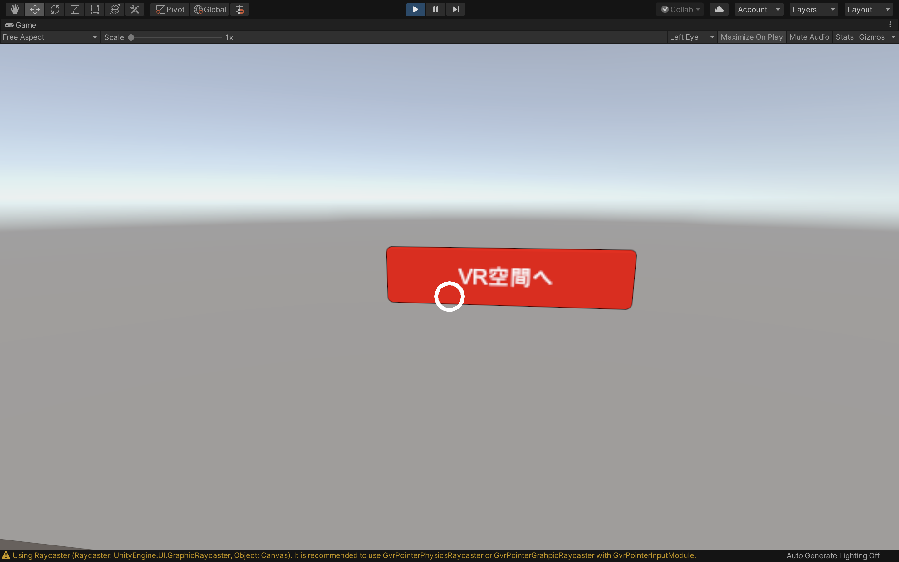
ここまでできたら保存してUnityを実行してみましょう。
視点がボタンと重なったタイミングでボタンとテキストの色が変わり、視線を外すとボタンとテキストの色が元に戻るかと思います。
また、ボタンに視線を一定時間合わせておくとVR空間へ画面遷移しているかと思います。
チャレンジ
画面遷移にフェードインのアニメーションを追加する
機能としては実装できたのですが、急に画面遷移するとユーザーは驚いてしまいます。
ですので、ブラックアウトでフェードイン・フェードアウトするアニメーションを追加してみましょう。
フェードインの簡単なアニメーションはこちらのパッケージを利用すると簡単に実装できます。
やり方は他にもこちらのサイトにも書いてあるのでぜひ挑戦してみてください。
うまくいかなかった場合はサポートいたします。
SkyBoxを追加する
現在のTitleSceneは何も表示されていないので寂しい印象があります。
ですので、TitleSceneにSkyBoxを追加してみましょう。
追加方法などは前回までの講習でやった内容ですので教材を確認しながら進めてみましょう。
ビルドしてみる
もしAndroid端末を持っている方はここまでのプロジェクトをビルドしてみましょう。
注意点としては、ビルドする前に新規で作成したTitleSceneを「Add OpenScenes」で追加する必要があります。
こちらも調べてぜひ挑戦してみてください。